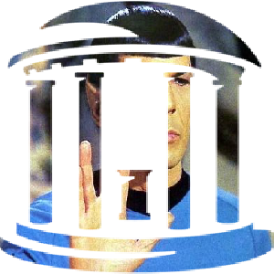
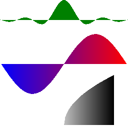

<h3>Test Orig Diff DIFF</h3>
checkers<br/>
<a href="checkers__test.png"></a>
&nbsp;&nbsp;<a href="checkers__orig.png"></a>
&nbsp;&nbsp;<a href="checkers__dif0.png"></a>
&nbsp;&nbsp;<a href="checkers__dif1.png"></a>
<br><br>
color_clock<br/>
<a href="color_clock__test.png"></a>
&nbsp;&nbsp;<a href="color_clock__orig.png"></a>
&nbsp;&nbsp;<a href="color_clock__dif0.png"></a>
&nbsp;&nbsp;<a href="color_clock__dif1.png"></a>
<br><br>
bitmap_hole<br/>
<a href="bitmap_hole__test.png"></a>
&nbsp;&nbsp;<a href="bitmap_hole__orig.png"></a>
&nbsp;&nbsp;<a href="bitmap_hole__dif0.png"></a>
&nbsp;&nbsp;<a href="bitmap_hole__dif1.png"></a>
<br><br>
spock_clock<br/>
<a href="spock_clock__test.png"></a>
&nbsp;&nbsp;<a href="spock_clock__orig.png"></a>
&nbsp;&nbsp;<a href="spock_clock__dif0.png"></a>
&nbsp;&nbsp;<a href="spock_clock__dif1.png"></a>
<br><br>
blendmodes2<br/>
<a href="blendmodes2__test.png"></a>
&nbsp;&nbsp;<a href="blendmodes2__orig.png"></a>
&nbsp;&nbsp;<a href="blendmodes2__dif0.png"></a>
&nbsp;&nbsp;<a href="blendmodes2__dif1.png"></a>
<br><br>
stars<br/>
<a href="stars__test.png"></a>
&nbsp;&nbsp;<a href="stars__orig.png"></a>
&nbsp;&nbsp;<a href="stars__dif0.png"></a>
&nbsp;&nbsp;<a href="stars__dif1.png"></a>
<br><br>
lion<br/>
<a href="lion__test.png"></a>
&nbsp;&nbsp;<a href="lion__orig.png"></a>
&nbsp;&nbsp;<a href="lion__dif0.png"></a>
&nbsp;&nbsp;<a href="lion__dif1.png"></a>
<br><br>
lion_head<br/>
<a href="lion_head__test.png"></a>
&nbsp;&nbsp;<a href="lion_head__orig.png"></a>
&nbsp;&nbsp;<a href="lion_head__dif0.png"></a>
&nbsp;&nbsp;<a href="lion_head__dif1.png"></a>
<br><br>
grad<br/>
<a href="grad__test.png"></a>
&nbsp;&nbsp;<a href="grad__orig.png"></a>
&nbsp;&nbsp;<a href="grad__dif0.png"></a>
&nbsp;&nbsp;<a href="grad__dif1.png"></a>
<br><br>
gradient_blendmodes<br/>
<a href="gradient_blendmodes__test.png"></a>
&nbsp;&nbsp;<a href="gradient_blendmodes__orig.png"></a>
&nbsp;&nbsp;<a href="gradient_blendmodes__dif0.png"></a>
&nbsp;&nbsp;<a href="gradient_blendmodes__dif1.png"></a>
<br><br>
path_graphs<br/>
<a href="path_graphs__test.png"></a>
&nbsp;&nbsp;<a href="path_graphs__orig.png"></a>
&nbsp;&nbsp;<a href="path_graphs__dif0.png"></a>
&nbsp;&nbsp;<a href="path_graphs__dif1.png"></a>
<br><br>
